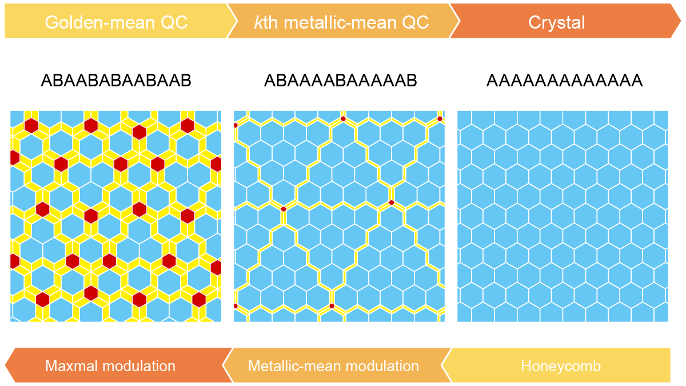

Aperiodic approximants bridging quasicrystals and modulated structures
T. Matsubara, A. Koga, A. Takano, Y. Matsushita & T. Dotera
Nature Communications 15, 5742 (2024).
Aperiodic crystals constitute a class of materials that includes incommensurate (IC) modulated structures and quasicrystals (QCs). Although these two categories share a common foundation in the concept of superspace, the relationship between them has remained enigmatic and largely unexplored. Here, we show “any metallic-mean” QCs, surpassing the confines of Penrose-like structures, and explore their connection with IC modulated structures. In contrast to periodic approximants of QCs, our work introduces the pivotal role of “aperiodic approximants”, articulated through a series of k-th metallic-mean tilings serving as aperiodic approximants for the honeycomb crystal, while simultaneously redefining this tiling as a metallic-mean IC modulated structure, highlighting the intricate interplay between these crystallographic phenomena. We extend our findings to real-world applications, discovering these tiles in a terpolymer/homopolymer blend and applying our QC theory to a colloidal simulation displaying planar IC structures. In these structures, domain walls are viewed as essential components of a quasicrystal, introducing additional dimensions in superspace. Our research provides a fresh perspective on the intricate world of aperiodic crystals, shedding light on their broader implications for domain wall structures across various fields.
Aperiodic crystals, including modulated structures and quasicrystals, are fascinating but their relationship is enigmatic. Here, we introduce the pivotal role of aperiodic approximants, uniting those crystals under the concept of superspace.